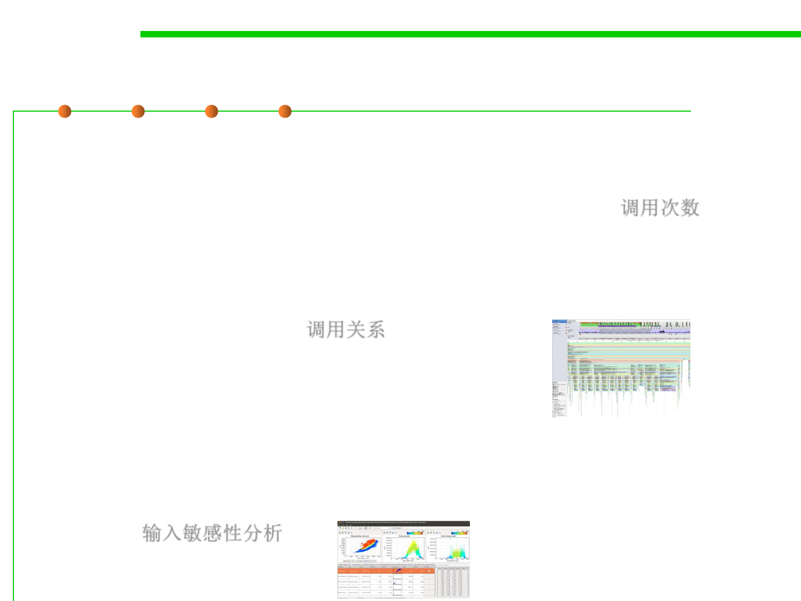

8.2 Dynamic Program Analysis Methods and Tools
Profiler types based on output
▪ Flat profiler
– Flat profilers compute the average call times, from the calls, and do not
break down the call times based on the callee or the context. 调用次数
▪ Call-graph profiler
– Call graph profilers show the call times, and frequencies of the functions,
and also the call-chains involved based on the callee. In some tools full
context is not preserved. 调用关系
▪ Input-sensitive profiler
– Input-sensitive profilers add a further dimension to flat or call-graph
profilers by relating performance measures to features of the input
workloads, such as input size or input values. They generate charts that
characterize how an application‘s performance scales as a function of its
input. 输入敏感性分析